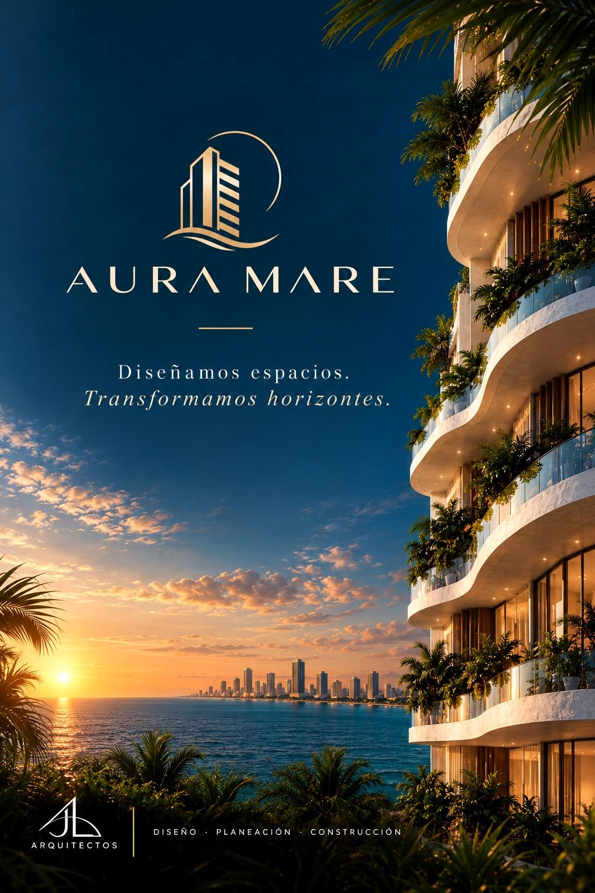
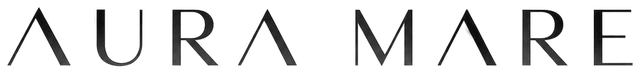

Misión
Somos una empresa dedicada a crear espacios para nuestros clientes, donde nuestro propósito es brindarle a las familias un lugar acogedor sin importar si su estancia es de corto o a largo plazo.
JL Arquitectos diseña, planea y construye espacios que integran la naturaleza, la vivienda y la vida en comunidad.
Estudiante de arquitectura
Estudiante de arquitectura
Somos una empresa dedicada a crear espacios para nuestros clientes, donde nuestro propósito es brindarle a las familias un lugar acogedor sin importar si su estancia es de corto o a largo plazo.
Ser un referente de innovación arquitectónica mediante edificios que integren la naturaleza, la vivienda y los espacios colectivos, fortaleciendo la conexión a través de un diseño sostenible, dinámico y funcional. Buscamos crear un entorno que promueva el bienestar de sus habitantes, la integración social y la armonía entre la arquitectura y el paisaje caribeño.


Nuestro proyecto de uso mixto frente al Caribe: vivienda, estancias cortas y siete locales comerciales.
Conoce el proyecto